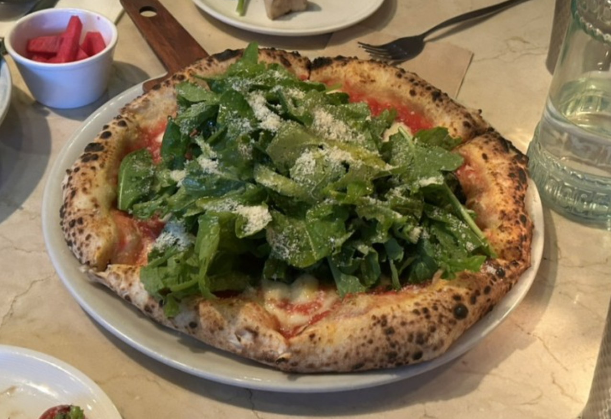
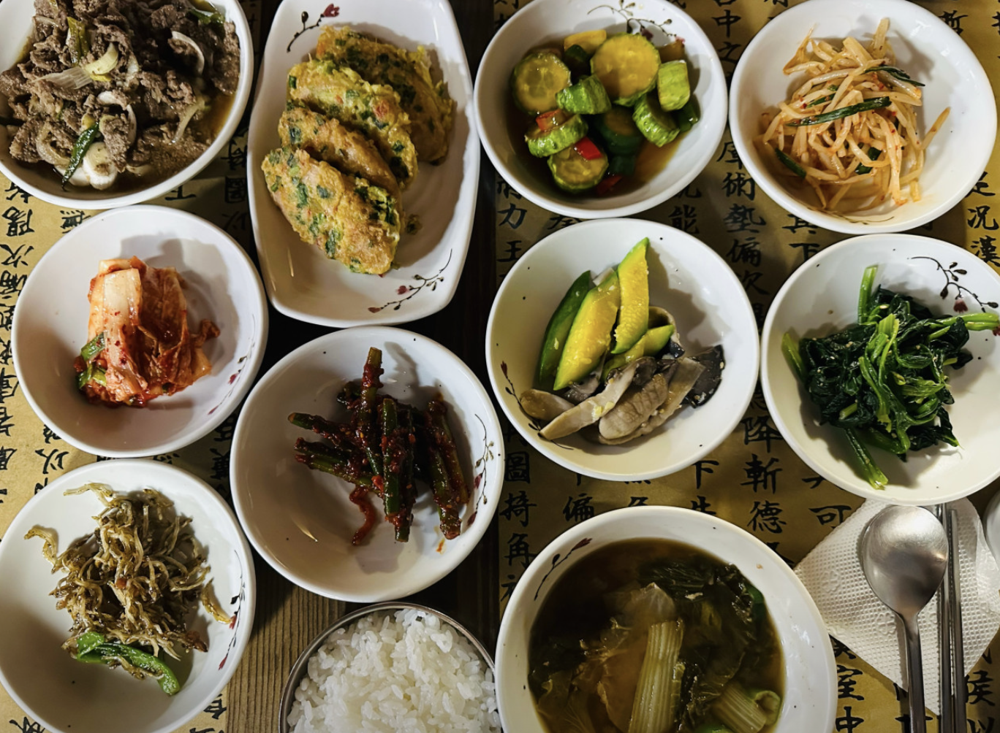
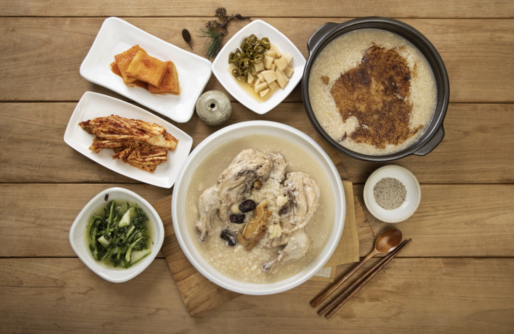
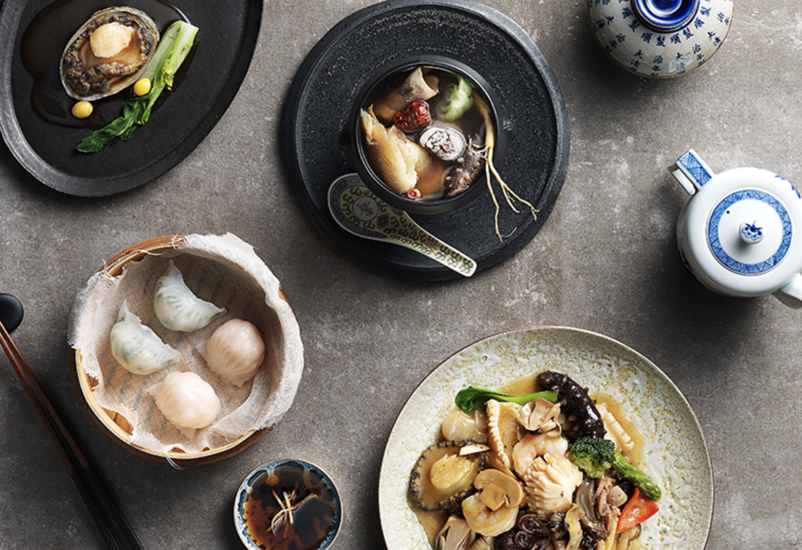
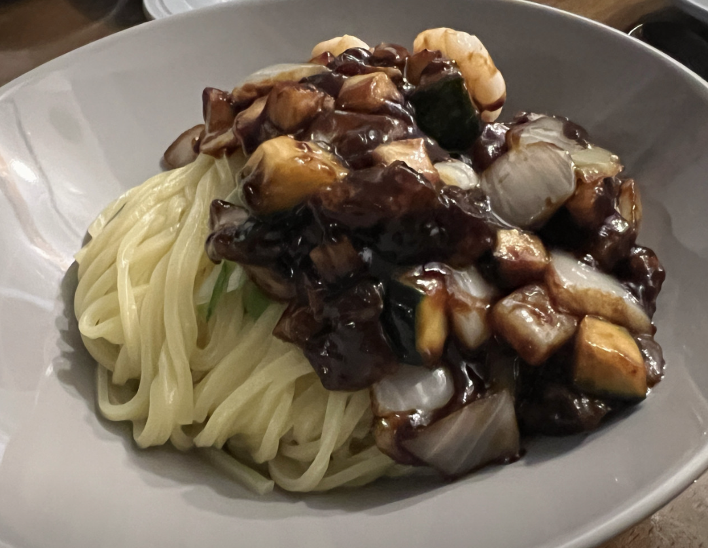
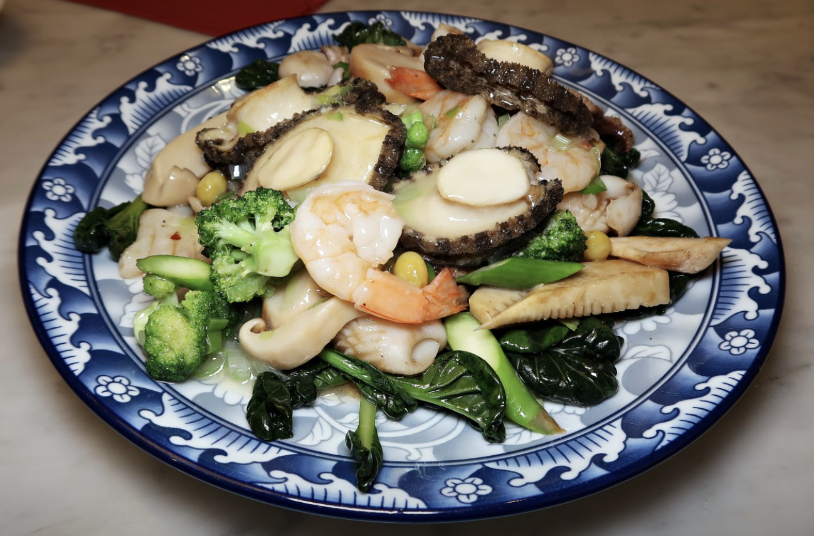
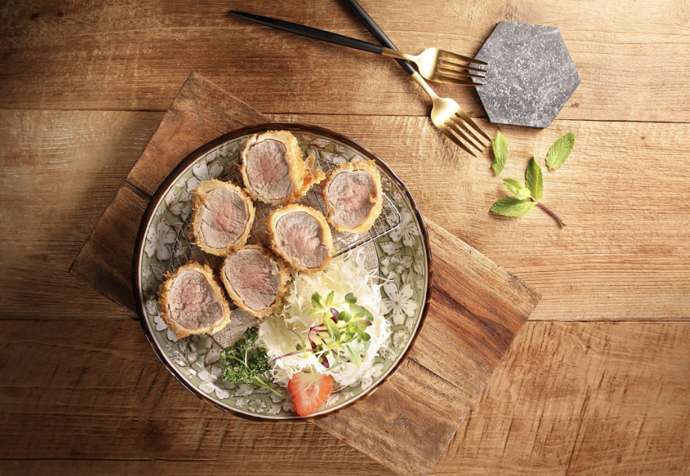
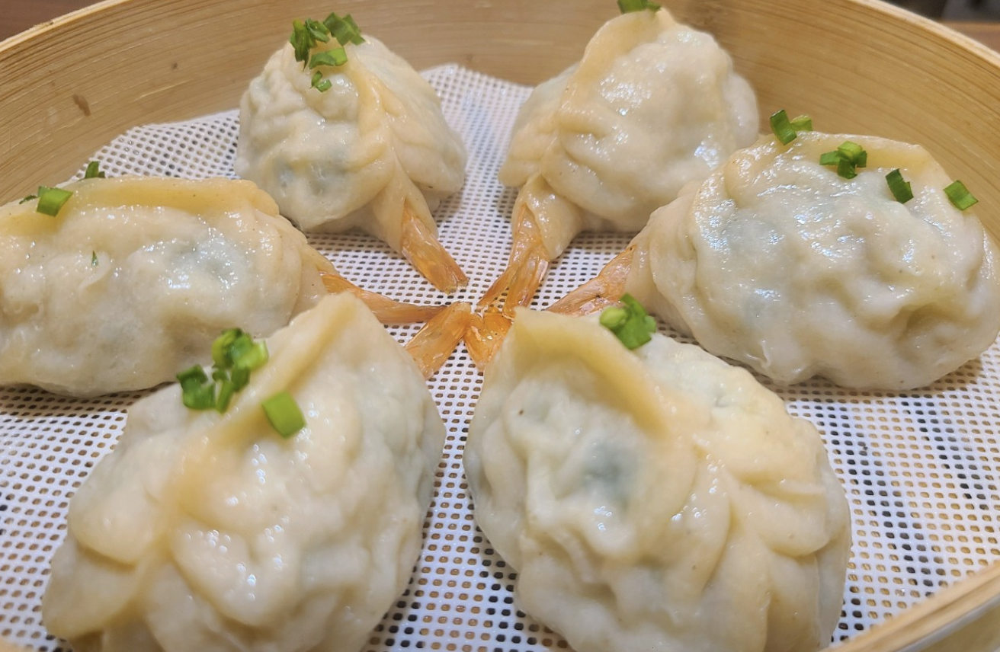
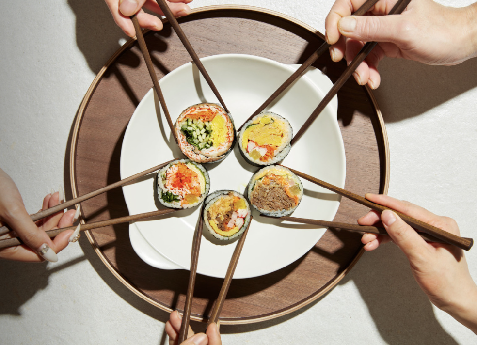
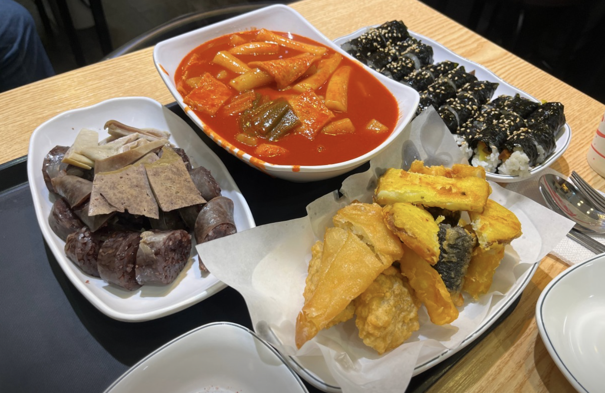

한식
한식 양식
양식 중식
중식 일식
일식 분식
분식서울 주요 맛집 BEST 3

- 해담채
- 주소 : 서울 강남구 테헤란로10길 18 역삼 823빌딩 지하1층
- Tel : 02-558-4997
- 소개 : 해담채는 프라이빗 개별룸에서 즐기는 해초바다요리 전문점입니다. 간단한 소모임이나 비즈니스에 적합한 아늑한 룸 부터 동호회 및 회식 손님을 위한 단체룸을 갖추고 있습니다.
- 지점 : 강남, 남부터미널, 삼성, 시청, 여의도
- 네이버맵평점 : 4.42(강남점 기준)
- 카카오맵평점 : 4.0(강남점 기준)
- 바로가기

- 피제리아라고
- 주소 : 서울 송파구 백제고분로41길 39 103호, 피제리아라고
- Tel : 0507-1434-8588
- 소개 : Lago means a Lake in Italian. 라고는 이탈리아어로 호수라는 뜻입니다. '내 마음은 호수'라는 시처럼 호수같은 평온함, 즐거운 대화 그리고 행복한 미감이 스미는 정통 나폴리 피자와 이탈리안 요리를 선사하는 피제리아 라고입니다.
- 네이버맵평점 : 4.45
- 카카오맵평점 : 4.1
- 바로가기

- 진작
- 주소 : 서울 중구 수표로12길 12
- Tel : 0507-1364-4484
- 소개 : 일식을 베이스로 한 퓨전 요리를 선보이며 하이엔드 요리의 대명사 '후토마끼' 를 시그니처로 하고 대창,연어,참치,항정살 등을 활용한 덮밥류와 두툼하고 부드러운 '모듬카츠' 그리고 진작만의 스타일로 재해석한 파스타 등 주류와 함께 곁들여 드시기 좋은 다양한 퓨전요리를 선보이고 있습니다.
- 네이버맵평점 : 4.47
- 카카오맵평점 : 4.1
- 바로가기
서울 주요 한식 맛집
- 해담채
- 주소 : 서울 강남구 테헤란로10길 18 역삼 823빌딩 지하1층
- Tel : 02-558-4997
- 소개 : 해담채는 프라이빗 개별룸에서 즐기는 해초바다요리 전문점입니다. 간단한 소모임이나 비즈니스에 적합한 아늑한 룸 부터 동호회 및 회식 손님을 위한 단체룸을 갖추고 있습니다.
- 지점 : 강남, 남부터미널, 삼성, 시청, 여의도
- 네이버맵평점 : 4.42(강남점 기준)
- 카카오맵평점 : 4.0(강남점 기준)
- 바로가기

- 한가네불고기
- 주소 : 서울 종로구 인사동길 59 지층
- Tel : 0507-1345-4388
- 소개 :
- 네이버맵평점 : 4.49
- 카카오맵평점 : 4.4
- 바로가기

- 채화정
- 주소 : 서울 성북구 오패산로3길 9
- Tel : 02-912-8333
- 소개 : 월곡 대표 누룽지 백숙 맛집으로 구수한 찹쌀누룽지와 닭백숙으로 몸과 마음을 건강하게 만드는 한상차림 전문점
- 네이버맵평점 : 정보없음
- 카카오맵평점 : 4.1
- 바로가기
서울 주요 양식 맛집
- 피제리아라고
- 주소 : 서울 송파구 백제고분로41길 39 103호, 피제리아라고
- Tel : 0507-1434-8588
- 소개 : Lago means a Lake in Italian. 라고는 이탈리아어로 호수라는 뜻입니다. '내 마음은 호수'라는 시처럼 호수같은 평온함, 즐거운 대화 그리고 행복한 미감이 스미는 정통 나폴리 피자와 이탈리안 요리를 선사하는 피제리아 라고입니다.
- 네이버맵평점 : 4.45
- 카카오맵평점 : 4.1
- 바로가기

- 울프강 스테이크하우스
- 주소 : 서울 강남구 선릉로152길 21 영인빌딩 1층
- Tel : 0507-1486-8700
- 소개 : 세계적으로 유명한 스테이크하우스의 한국 1호점
- 네이버맵평점 : 4.5
- 카카오맵평점 : 3.6
- 바로가기

- 정원레스토랑 어반가든
- 주소 : 서울 중구 정동길 12-15
- Tel : 0507-1440-2259
- 소개 : 광화문 18년 맛집 도심속 정원레스토랑. 가족, 연인, 친구들과 함께 추억이 있는 자연주의 식탁으로 초대합니다.
- 네이버맵평점 : 정보없음
- 카카오맵평점 : 4.2
- 바로가기
서울 주요 중식 맛집

- 몽중헌
- 주소 : 서울 강남구 도산대로 445 엠빌딩 B1F
- Tel : 02-3446-7887
- 소개 : Authentic Dimsum&Chinese Cuisine 몽중헌에서는 중국 선화(仙話) 속 신선의 세상을 모티브로 꿈속의 집을 형상화한 인테리어와 대가의 엄격한 기준과 자부심을 담은 정통 중식 요리의 진수를 즐기실 수 있습니다. 특히 중국 현지 명인이 만드는 30여 가지의 다채로운 딤섬은 홍콩 본토의 맛을 그대로 재현해 정통 딤섬의 깊은 맛을 표현합니다.
- 지점 : 청담, 안국, 페럼타워, 방이, 공덕, 대치, 문정, 반포
- 네이버맵평점 : 4.46(청담점 기준)
- 카카오맵평점 : 3.8(청담점 기준)
- 바로가기

- 목란
- 주소 : 서울 서대문구 연희로15길 21
- Tel : 02-732-0054
- 소개 :
- 네이버맵평점 : 정보없음
- 카카오맵평점 : 3.3
- 바로가기

- 홍명
- 주소 : 서울 강남구 논현로131길 10 미현빌딩 1층 홍명
- Tel : 02-548-2223
- 소개 :
- 네이버맵평점 : 4.29
- 카카오맵평점 : 3.6
- 바로가기
서울 주요 일식 맛집
- 진작
- 주소 : 서울 중구 수표로12길 12
- Tel : 0507-1364-4484
- 소개 : 일식을 베이스로 한 퓨전 요리를 선보이며 하이엔드 요리의 대명사 '후토마끼' 를 시그니처로 하고 대창,연어,참치,항정살 등을 활용한 덮밥류와 두툼하고 부드러운 '모듬카츠' 그리고 진작만의 스타일로 재해석한 파스타 등 주류와 함께 곁들여 드시기 좋은 다양한 퓨전요리를 선보이고 있습니다.
- 네이버맵평점 : 4.47
- 카카오맵평점 : 4.1
- 바로가기

- 헤키
- 주소 : 서울 마포구 동교로9길 33 1층 헤키
- Tel : 070-7773-9870
- 소개 : 망원동에 위치한 김민성셰프의 '화양절충요리(和洋折衷)'를 모티브로한 독창적 '콜드스모크숙성' 카츠 레스토랑
- 네이버맵평점 : 4.56
- 카카오맵평점 : 4.6
- 바로가기

- 스시도쿠
- 주소 : 서울 성동구 왕십리광장로 6 1층
- Tel : 0507-1320-3255
- 소개 : 왕십리역 최고의 일식 스시도쿠는 노르웨이 슈페리어 등급 연어, 320kg 이상 S급 혼마구로(참다랑어)의 1번 도로, 완도산 3kg 대광어, 국내 최고의 참돔인 천보도미, 완도산 활전복 등 국내에서 수급가능한 최고의 재료를 사용하며, 15명의 셰프들이 모든 생선을 일식 정통 고부지메(다시마 숙성)와 저온방식으로 수제로 숙성해 맛을 극대화합니다. 매출에서 재료비의 비중이 무려 45%를 넘어가는 스시도쿠는 틸라피아, 청새치, 흑새치 등 저급 생선과 일본산 수산물을 일체 사용하지 않습니다.
- 네이버맵평점 : 4.54
- 카카오맵평점 : 4.1
- 바로가기
서울 주요 분식 맛집

- 구복만두
- 주소 : 서울 용산구 두텁바위로 7
- Tel : 02-797-8656
- 소개 : 한국인 남편과 중국인 아내가 운영하는 구복만두는 좋은 재료로 정성껏 빚은 맛있는 만두를 저렴한 가격에 즐길 수 있는, 가격 만족도가 훌륭한 식당이다. 이곳의 대표 메뉴는 뜨거운 기름에 노릇하게 구운 후 자작하게 물을 부어 수분이 모두 증발할 때까지 찌는 일명 ‘물에 튀긴 만두’다. 스테디셀러인 샤오롱바오와 통새우 만두에 김치 만두도 별미. 테이크아웃도 가능하며, 주류는 판매하지 않는다.
- 네이버맵평점 : 4.41
- 카카오맵평점 : 3.7
- 바로가기

- 수아당
- 주소 : 서울 성북구 동소문로20가길 33
- Tel : 0507-1367-0625
- 소개 : 대한민국 가장 맛있는김밥 수아당 입니다. 20,21,22 [ 3년 연속 네이버 주문어워즈 수상 ] 2022 김슐랭 가이드 BEST 김밥, 서울 고객 만족도 설문조사 4.95 (5점), 네이버 영수증리뷰 우수업체 4.88 (5점), 유일무이 5cm 맘모스김밥, 식재료에 한점 부끄러움 없습니다.
- 네이버맵평점 : 4.42(강남점 기준)
- 카카오맵평점 : 4.0(강남점 기준)
- 바로가기

- 쪼매매운떡볶이
- 주소 : 서울 노원구 공릉로 208
- Tel : 0507-1339-1170
- 소개 :
- 네이버맵평점 : 4.53
- 카카오맵평점 : 4.5
- 바로가기